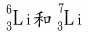

原子漫談 江銘輝 五夢網
一、 前言：
在兩千多年以前的中國春秋戰國時期，我們中國的學術已經很發達。那時候孔子、孟子、老子、墨子、韓非子……諸子百家，各有各的見解。
一天，莊子與墨子發生了爭論，莊子說，要是有一根一尺長的木棍，我今天把它折成兩段，明天再把那半段再折成兩段，後天又去把那半段再折成兩段……這樣一直折下去，即使折了三十萬年，也沒有完的時候，可以永遠無限地折下去。
墨子可不同意莊子的看法，墨子說，不可能無限制地那樣折下去，總有一定的限度，當折到構成物質的最小「微粒」時，就不能再折下去，墨子把它稱作「端」，「端」就不能再折下去了。
誰對呢?
討論:現代的科學證明物質不可能無限制地，分割下去。物質是由分子組成的，分子又是由原子組成的。原子還可以再「折」嗎？因為原子是由一些更小的粒子，「基本粒子」組成的。到了「基本粒子」，那就不能再「折」下去了，因為基本粒子不再是由更微小的粒子組成的。這些原子內的基本粒子包括有電子、質子及中子。
今日科學家將基本粒子分成二類，如電子質量較輕的，它不被束縛在原子核的稱為輕子(lepton)，中子、質子質量較重，受到核力的作用，被束縛在原子核中，稱為強子(hardron) ，今日物理學家相信強子是由更小稱為夸克(quark)的基本粒子所構成，至於夸克是否由更小的基本粒子所構成，目前尚不清楚。
二、 原子與原子核的大小
科學家們已發現所有的物質都是由微細的質點稱為「原子」所組成的，這個原子的大小約為10－10公尺，原子究竟有多小呢?我們作以下的比喻，使各位同學大概可了解原子的大小。那就是說:若把原子變成蘋果般之大小，則蘋果將會變成地球那麼大，如圖1。至於原子核，我們也可以將它與原子作比較，若把原子核放大到玻璃彈珠那樣的大小，則原子就變成一座音樂廳那麼大。
圖1：原子之於蘋果，猶如蘋果之於地球。
原子核雖然比起原子體積那麼小，但重量來說，原子核的重量卻佔整個原子的99.9%。
三、 原子的結構
如圖2，原子可再細分為電子、質子和中子:這些粒子都非常小，直徑不超過l0－15公尺，甚至或更小。這三種粒子中，電子是帶負電的，質量只有質子的1837分之一，電子位於原子的最外圍，不斷的繞著由中子與質子組成的原子核運轉，這好像太陽系裡的行星繞太陽運轉一般，有關原子的構造如圖2。
質子：帶正電，通常用┼表示。
中子：不正電，通常用○表示。
中子：帶負電，通常用一表示。
圖2：原子的結構
四、原子的共同特性
不同的原子有不同數目的電子、質子和中子，但是都具有下述一般性質:
1：大家都知道，相同電荷會互相排斥，不同電荷會互相吸引，但為什麼許多同電荷的質子和中子會同時擠在一起，而不被排開，原來質子和中子被一強大而足以克服質子間巨大排斥的力量，而束縛在一起，這股力量就是所謂的強核力。
2：質子與電子帶相同電量的電荷，但極性卻相反，在一個中性的原子中，電子數及質子數是相同的。而中子不帶電，但其質量比質子的質量稍大。
3：電子只能以某些特定的能階繞行著原子核，這能階也稱為殼層，在正常情況下電子盡可能的填滿最接近原子核的殼層，但是每一層能殼的電子數是受限的，例如第一殼層只能填滿2個電子，第二層只能填滿8個電子，第三層只能填滿18個，(圖3)
圖3：電子只能以某些特定的能階繞行著原子核，這能階也稱為殼層。
4：若電子以某種方式獲得能量，如圖4所示，它便會由原來的殼層跳到一個較高的空殼層上，這種情形便稱為受激，之後電子會迅速跳回低殼層，這時它將失去能量，並發射出一光子。根據釋出的能量不同，發射出來的光線可能是紅外線、可見光、紫外線，或是X射線，失去的能量愈大，所輻射電磁波的波長愈短。
圖4：電子由原來的殼層跳到一個較高的空殼層上，稱為受激，之後電子會迅速跳回低殼層，這時它將失去能量，並發射出一光子。
五、元素與原子
自然界的物質是由90幾種稱為元素的物質所構成。而原子是任何元素的最小成分(如表)，在表中列出一些元素的名稱與這些原子的化學符號。
|
元素
|
原子符號
|
原子序
(質子數或電子數)
|
|
氫
|
H
|
1
|
|
氦
|
He
|
2
|
|
鋰
|
Li
|
3
|
|
鈹
|
Be
|
4
|
|
硼
|
B
|
5
|
|
|
……
|
|
|
鐳
|
Ra
|
88
|
|
釷
|
Th
|
90
|
|
鈾
|
U
|
92
|
表：各種不同元素及原子核中的質子數
此表同時也告訴我們不同的元素，在其原子核中有不同數量的質子，因此在軌道上也對應著不同數量的電子。在表中最輕的原子是氫原子，只有一個質子(因此也只有一個電子)，而最重的是鈾，有92個質子。
質子數大於92（即鈾元素）的元素稱為超鈾元素，它都是由人工核反應發現和制取的，至今發現的超鈾元素有18種。超鈾元素大都是不穩定的人造元素，它們的半衰期很短。
在圖5中，我們以原子模型，解釋氫(H)、氦(He)、鈹(Be)三種元素的組成。
圖5：氫原子(左)、氦原子(中)、鈹原子(右)
在原子核中質子的數目稱之為原子序或質子數，因為質子帶的電量為+1單位，所以原子序告知了同一原子中原子核所帶的電荷數，對中性原子而言，也決定了電子數。原子序也決定了一個原子的化學性質，亦即決定了它與其他原子結合的方式。
質子與中子因為是在原子核中發現的，所以合稱為核子(nucleon)，在原子核中，質子和中子的總數稱之為質量數或核子數。
若一元素的化學符號為X而原子量為A，原子數為Z，則此原子核的表示法即為：
例如，在圖5的三種原子核便可表為
對每一種原子核。左上角與右下角的數目差(A－Z)，指出了在原子核中，中子的數目。例如，氫原子沒有中子，而鈹原子即有5個。
六、核種 (nuclides)和同位素 (isotopes)
有一些較特殊的元素在原子核中質子數相同但其中子數卻不等，例如自然界中存在的鋰元素便有兩種形式，如圖6中，一個具有3個中子，另一個具有4個中子;有3個中子的鋰元素其質量數為6，4個中手的鋰元素質量數為7，它們的符號表示為:
。
這些不同形式的同一元素，稱之為同一核種，通常以質量數標示之，例如鋰-6，鋰-7。自然界中有許多元素是以這種混合的核種而存在的。
圖6：鋰－6；鋰－7二同位素
具有相同原子序。但質量數不同的核種，稱之為同位素。
但氫原子的同位素有幾種，分別含有零個中子（氫-1），一個中子（氘），兩個中子（氚）以及更多的中子。重水（或稱氘化水，化學式D2O）就是氘與氧的結合。